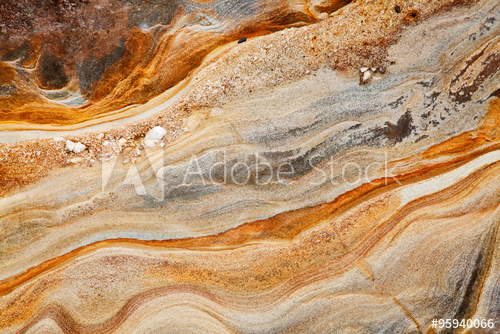
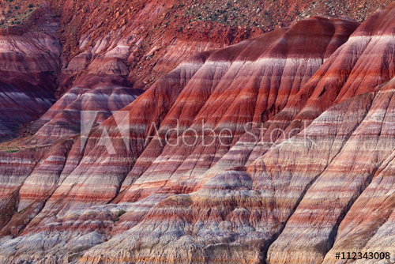

Den andre hoved bergarten er sedimentær- eller avsetningsbergart, og det er den vanligste bergarten på landjorda. De dannes ved at løsmasser avsettes og presses sammen til en hard bergart. Dette kan skje på forskjellige måter. F.eks. En stor elv renner ut i havet, denne elva fører med seg løsmasser; leire, sand og grus, som avsettes ved elveutløpet. Løsmassen bygger seg opp lag for lag på havbunnen. Omdanningen fra løsmasser til fastbergart kalles diagenese. Dette skjer ved at tyngden av stadig nye avsetninger gjør at jordskorpa langsomt synker ned. Når dette skjer kan område motta stadig nye løsmasser. Massen blir stadig vekk begravd under nye lag, dette kan føre til større trykk og høyere temperatur. Varmen og trykket kitter sammen de opprinnelige lagene av løsmasser, også litt etter litt blir de til fast fjell, en avsetningsbergart. Man gjenkjenner en sedimentærbergart ved dens lagdelte struktur.
 